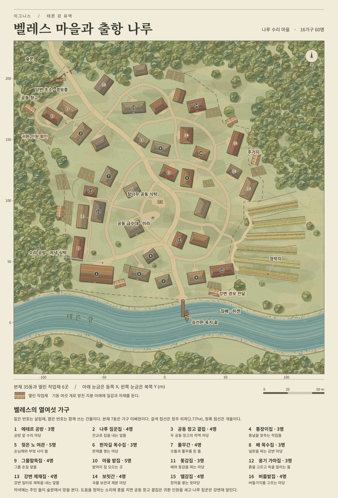

벨레스 마을과 출항 나루
벨레스는 열여섯 가구 60명이 사는 나루 마을이다. 지붕 위의 짙은 번호는 살림채를 가리킨다. 숲문에서 종이 울리면 공동 창고 곁집이 돌아온 사람을 세고, 나루 짐꾼은 강변에서 일하는 사람과 배에 소식을 전한다.

작업채는 재료와 일감을 비에서 지킬 수 있게 기둥 여섯 개에 지붕을 얹었다. 공방 동쪽과 공동 창고 서쪽 작업채는 처마가 본채나 길에 겹치지 않도록 기존 제작 좌표에서 각각 약 2.2m와 3.6m 옮긴 배치안이다.
마을 채색 지도 보기
 숲문
저장고
주거지
참나무 공동 식탁
공동 급수대
수리 공방
경작지
승선판
숲문
저장고
주거지
참나무 공동 식탁
공동 급수대
수리 공방
경작지
승선판
공방에서 나온 수레는 마당의 열린 쪽으로 돌아 큰길에 합류한다. 급수대와 식탁을 사이에 둔 두 길은 위쪽 집터에서 다시 만난다. 물가에서는 자갈이 드러난 안쪽 기슭이 넓어지고, 그 건너편은 숲을 끼고 길게 휜다.
채색본의 지붕·울타리·강안은 배치 시안이다. 마당이 길로 열리는 자리는 가이베르크, 밭과 집 사이 갈림길은 판달린, 물굽이와 진입로가 만나는 지점은 레데치코를 참고했다.